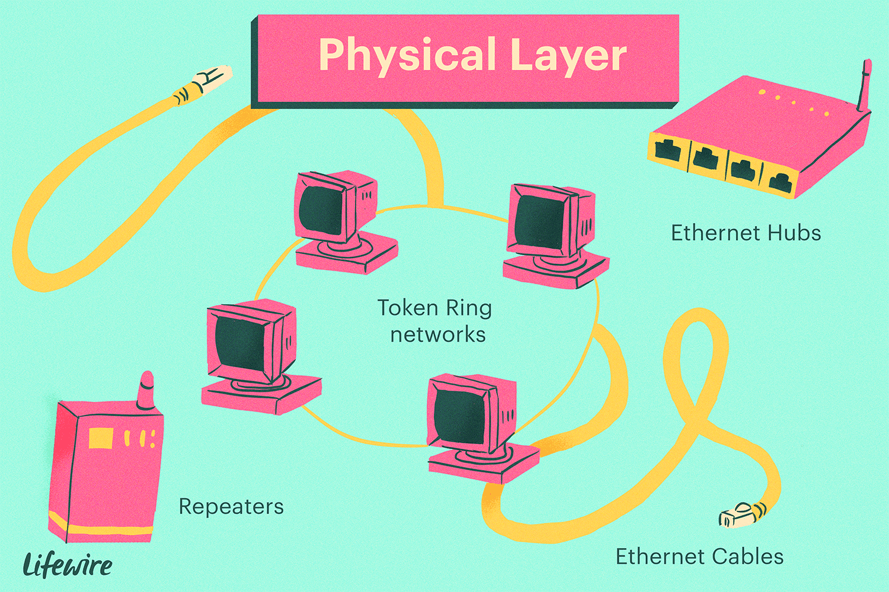

De fysieke laag is de onderste/eerste laag uit het drielagenmodel. De fysieke laag is alles wat buiten de computer zelf nodig is om het te laten werken, zoals het toetsenbord (randapparatuur), maar ook de hardware. In een telefoon is de fysieke laag de accu tot en met de touchscreen. Dus alles wat je ziet aan de buitenkant hoort ook bij deze laag.
De bits in de computer worden omgezet in een fysiek signaal, vandaar de fysieke laag. Dit signaal kan alleen worden overgedragen via een hulpmiddel, zoals koperdraad, glasvezel of de lucht (denk aan Bluetooth).